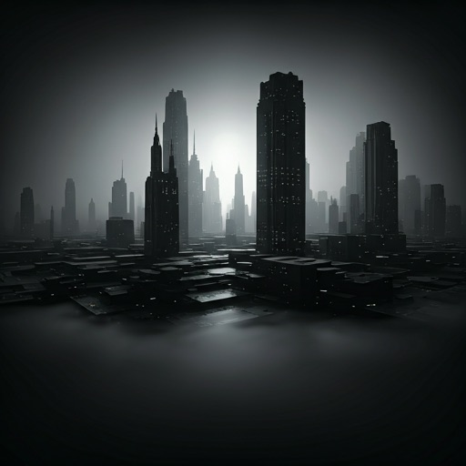

The Great Convergence: UI Design Meets Procedural Narratives
In a shocking turn for the digital landscape, the boundary between static layout and living narrative has finally collapsed. Designers across the globe are reporting a surge in "emotive frameworks" that adapt their very structure to the content they host. This movement, dubbed the Thematic Engine, promises a future where the interface is as expressive as the art it contains. Experts suggest that we are entering a new era of digital craftsmanship, moving away from generic SaaS grids toward curated, atmospheric experiences.
BY ARTHUR PENDLETON
READ FULL STORY